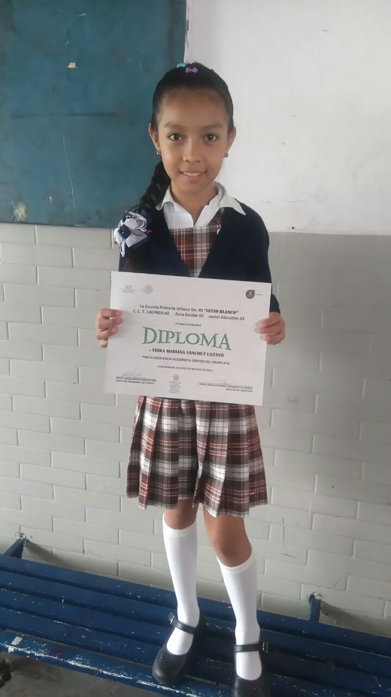

Conforme iba creciendo, mi ilusion de ser doctora iba creciendo, cada vez que me compraban juguetes era algo refente con una doctora, cada que me preguntaban que, seria el dia en que estuviera grande siempre asegure que seria doctora, amaba la navidad porque siempre me llegaba un gran juguete, recuerdo que aveces me llegaban muñecas de disney, carriolas y todo el kit completo para mis muñecas, una cocina de juguete, ropa , castillos o casa para mis barbies, barbies. Cuando tenia 6 años entre a la escuela y tuve muchas amigas, en ese entonces mi hermana ya estaba porque ella nacio cuando yo tenia 3 años, cuando tenia 7 años obtuve un diploma por mi calificacion.
Mi etapa favorita siempre fue la primaria, porque conoci a muchas personas increibles con las que aun tengo un enorme recuerdo, obtuve muchos diplomas desde primero hasta sexto grado, tuve maestros que marcaron etapas muy bonitas de mi vida, maestros que siempre estuvieron ahi para apoyarme y darme muchos motivos para ser una chica estudiosa, mis papas siempre estuvieron todo el tiempo al pendiente de mi ayudandome a aprender acerca de las matematicas etc. En tercer grado entre a un concurso de baile de la primaria con mis amigas y durante una semana estuvimos ensayando nuestra coreografia, y recuerdo que me toco una maestra muy estricta, en cuarto grado tuve un maestro muy divertido y conoci a nuevas personas, en quinto grado me asignaron a una maestra increible (mi favorita), gracias a ella aprendi muchas cosas, todas las dudas sobre un tema ella me explicaba, cuando no sabia resolver algo de matematicas tambien estaba ahi, tiempo despues observaba como ensayaban los de la escolta y yo queria estar en la escolta, entonces me propuse que debia de tener buenas calificaciones y asi estaria en la escolta. El dia del niño llevaron a la escuela un iglu inflable, donde primero nos pusieron una pelicula y despues hicieron una disco con burbujas, cada año hacian kermes dentro de la institucion y a mi me encantaba estar en la disco con mis amigas, en sexto grado les organizamos una despedida a los que ya se iban a la secundaria, regresando a clases, anunciaron a las personas que estarian en la escolta y me nombraron. Yo estaba muy contenta porque era algo que desde hace tiempo me lo habia propuesto. Les comente a mi papas la noticia. Y fui a concursar tiempo despues. Cuando tenia 9 años hice mi primera comunion. Fue un momento incomparable. En vacaciones yo y mi familia soliamos ir a Tuxpan Jalisco con mis abuelos maternos.

Despues de terminar la primaria con promedio de 9.1, entre a la secundaria que me quedaba muy cerca de donde vivia y me toco en el turno de la tarde, estando ahi aprendi muchas cosas que me hicieron reflexionar conoci a muchas personas buenas y malas, con las que al final tuve una gran leccion, cuando entre a primero de secundaria la tuve que hacer a linea por motivos de la pandemia, entrando a segundo regresamos a la secundaria separando el grupo, (una semana asistia la mitad, y otra semana iba la otra mitad del grupo), tiempo despues anunciaron el regreso completo de los alumnos y fue cuando hice demasiadas amigas y amigos, sali en el cuadro de honor en segundo lugar, y tuve maestros que me aportaron un gran aprendizaje, despues estuve un tiempo asistiendo a un curso de ingles en el que aumente por completo mi capacidad en este, comforme pasaba el tiempo cada vez mi aprendizaje era mejor, despues entre a tercero y fue el cambio de escolta ya que los que estaban se irian a la preparatoria, entonces pues nuevamente me propuse estar en la escolta y afortunadamente, estuve en la escolta como abanderada. Era la representante de mi salon, tiempo despues salimos de escursion a un acuario, despues hubieron unas cosas que me incomodaban y mis papas me cambiaron al turno de la mañana (solo un tiempo), luego mis papas estaban tomando la desicion de irnos a vivir a Tuxpan Jalisco, en ese entonces antes de que me cambiaran de turno estabamos por ir a concursar fuera, pero mis papas mejor decidieron que nos fueramos a Tuxpan y asi fue, nos vinimos, estando alla nos quedamos un timepo en casa de mis abuelos maternos, y para ese entonces, termine la secundaria en la Miguel Hidalgo, donde hice amistades que hasta ahorita tengo aun comunicacion, practicamente entre cuando ya faltaba muy poco para salir, despues termine con promedio final de 9.7 y fui a hacer mi examen de admision al cbtis 70, despues de un gran esfuerzo, logre entrar.